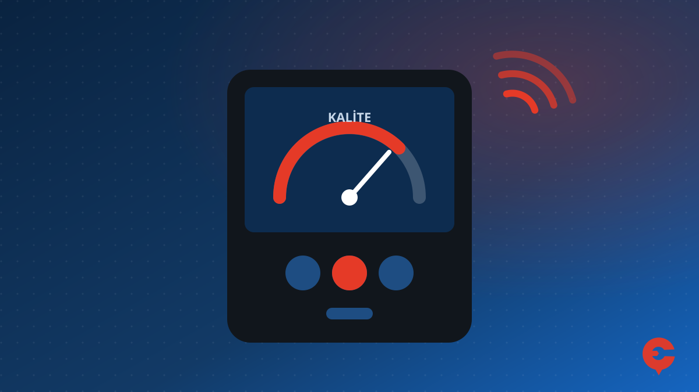

Ankara'da çanak anteni doğru kurmanın en önemli kısmı, çanağı Türksat uydusuna doğru açıda ve yönde çevirmektir. Bu yazıda Ankara (Çankaya, Dikmen, Ayrancı, Balgat, Öveçler ve çevresi) için Türksat 42° Doğu ayar değerlerini ve ayarın nasıl yapıldığını anlatıyoruz.
Ankara İçin Türksat 42°E Ayar Değerleri
| Değer | Ankara (Çankaya) | Açıklama |
|---|---|---|
| Elevasyon (dikey açı) | ≈ 43° | Çanağın yukarı bakma açısı |
| Azimut (coğrafi) | ≈ 166° | Güneyin yaklaşık 14° doğusu |
| Azimut (pusula) | ≈ 160° | Ankara'daki manyetik sapma (~6° doğu) düşülmüş değer |
| LNB açısı (skew) | ≈ 11° | LNB'nin kendi ekseni etrafında döndürülmesi |
Değerler Ankara merkezine göre hesaplanmıştır; şehir içinde birkaç kilometrelik fark açıyı pratikte değiştirmez. Türksat'ın televizyon yayınlarını taşıyan uyduları 42° Doğu konumunda bulunduğu için Türkiye'deki ulusal kanallar bu ayarla izlenir. Ağustos 2026'daki uydu değişikliğinde konum değişmediğinden çanak ayarı da aynı kaldı.
Elevasyon Açısı Nasıl Ayarlanır?
Evlerde kullanılan çanakların neredeyse tamamı ofset çanaktır. Ofset çanakta LNB çanağın tam önünde değil, alt tarafında durur; bu yüzden çanak gövdesi olması gerekenden daha dik görünür. Gövdeye açı ölçer koymak yerine, çanak ayağının arkasındaki elevasyon skalasını 43° civarına getirip sinyale göre ince ayar yapmak gerekir.
Azimut (Yön) Nasıl Bulunur?
- Pusulada güneyi (180°) bulun, ardından çanağı yaklaşık 20° doğuya çevirin (güneye bakarken biraz sola). Yani pusulada yaklaşık 160°. Pusula manyetik kuzeyi gösterdiği için bu fark, coğrafi yöne göre 14°'lik dönüşe karşılık gelir.
- Telefon pusulaları demir korkuluk, çanak ayağı ve elektrik tesisatı yakınında yanlış gösterebilir; ölçümü metal yüzeylerden uzakta yapın.
- Komşu binalardaki ve aynı cephedeki diğer çanaklar iyi bir referanstır: Türksat'a bakan çanaklar aşağı yukarı aynı yöne bakar.
LNB Açısı (Skew)
Ankara'da uydu tam güneyde değil, biraz doğuda olduğu için LNB'nin de kendi ekseni etrafında yaklaşık 10–11 derece döndürülmesi gerekir. Doğru yön, sinyal kalitesi göstergesine bakılarak bulunur: LNB'yi yavaşça iki yöne çevirip kalitenin en yüksek olduğu noktada sabitleyin.
Adım Adım Ayar
- Çanak ayağını sağlam ve tam dik (su terazisiyle) monte edin. Ayak eğik olursa açılar kayar.
- Elevasyonu skala üzerinden 43° civarına getirin, cıvataları hafif sıkın.
- Çanağı güneyden doğuya, yaklaşık 160° (pusula) yönüne çevirin.
- Uydu alıcısında sinyal menüsünü açın veya sinyal ölçüm cihazı bağlayın. Türksat'ta bir frekans seçin (ör. Türksat şebeke arama frekansı).
- Çanağı birkaç milimetrelik hareketlerle sağa-sola, sonra yukarı-aşağı oynatarak kalite değerini en yükseğe çıkarın. Güç (seviye) değil, kalite değeri esas alınmalıdır.
- LNB açısını ayarlayın, tüm cıvataları sinyal kaymayacak şekilde sırayla sıkın.
- Kanal taraması yapın.
Sık Sorulan Sorular
Ankara'da çanak anten hangi yöne bakmalı?
Türksat 42° Doğu için çanak güneyin yaklaşık 14° doğusuna bakmalıdır. Coğrafi azimut yaklaşık 166°, pusulada ise yaklaşık 160°'dir.
Ankara'da çanak anten elevasyon açısı kaç derece?
Ankara için Türksat 42° Doğu elevasyon açısı yaklaşık 43°'dir. Ofset çanaklarda bu değer çanak ayağındaki skaladan ayarlanır.
Çanak anten açısı biraz kayarsa ne olur?
Bir iki derecelik kayma bile sinyal kalitesini ciddi düşürür; kanallar donmaya başlar veya 'sinyal yok' uyarısı görülür. Bu durumda çanağın yeniden ölçüm cihazıyla ayarlanması gerekir.
Çankaya ve çevresinde çanak anten sorunu mu yaşıyorsunuz? Yerinde arıza tespiti ve kurulum için arayın ya da WhatsApp'tan arızanın fotoğrafını gönderin.
0553 450 20 33 WhatsApp